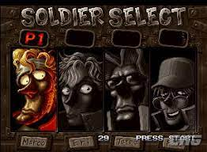
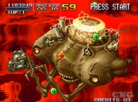
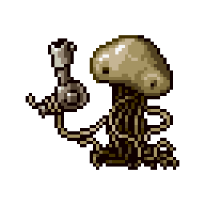
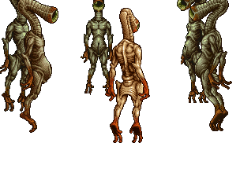

La Segunda Guerra Moderna, desencadenada tras la rebelión del General Morden y encaminada a imponer un nuevo orden mundial, ha llegado a su fin. Han sido múltiples las víctimas del conflicto, por no mencionar los daños materiales. En esa guerra, un resucitado Morden trató de llevar a cabo un golpe de estado a nivel mundial, pero fue evitado tras el ataque relámpago de las Fuerzas del Gobierno, gracias a la Agencia de Inteligencia que pudo saber con antelación las pretensiones del malvado general.
Marco y Tarma, del escuadrón de los Peregrine Falcons, los cuales cuentan con una distinción por sus actos de servicio en el campo de batalla, siguen en activo y participan en innumerables misiones que lleva a cabo el escuadrón. Han reiterado su deseo de no participar más en estas misiones, pero siempre se rechaza. A pesar de que el general ha sido declarado como desaparecido en combate, son varias las facciones que lucharon con el general y que todavía quedan activas, de modo que Marco y Tarma deben ser enviados a todas esas regiones del mundo con el objetivo de poner fin a dichos centros de resistencia.
En medio de la batalla, ambos héroes no podían dejar de pensar en su mayor temor, que todo esto no fuese más que un nuevo intento de levantamiento rebelde, un tercer (y puede que definitivo) alzamiento contra el orden mundial, comandado por tan peligroso villano... Ellos sentían que el demonio todavía seguía vivo, y que no renunciaría a sus ansias de poder, a su oscuro deseo de dominar el mundo.
Mientras tanto, el escuadrón de Operaciones Especiales S.P.A.R.R.O.W.S., de la Agencia de Inteligencia de las Fuerzas del Gobierno, ha estado ocupando buscando el paradero del General Morden, pero paralelamente también ha estado investigando una serie de misteriosos sucesos, como por ejemplo la desaparición de diversas personalidades a nivel mundial, desaparición de ganado aleatorio y aparentemente sin importancia, o el paulatino agrandamiento de algunos seres vivos. En conjunto, no parece tener relación con el malvado general.
En vista de las conclusiones de tales investigaciones, las autoridades militares deciden emprender una nueva misión conjunta de los S.P.A.R.R.O.W.S. y los Peregrine Falcons. Su primer destino será una isla aparentemente desierta, lugar donde al parecer el general esconde restos de su ejército. Y es que la Agencia de Inteligencia cree que a pesar de que todo indica lo contrario, es posible que exista una conexión entre esos misteriosos eventos y el Ejército Rebelde. Naturalmente se encuentran solos en esta tesitura, ya que las autoridades militares de más alto rango no tienen en cuenta estas conclusiones y por lo tanto, creen que dicha misión no tiene razón de ser.
Las primeras averiguaciones ofrecen datos reveladores, pues además de localizar a las fuerzas de Morden, también dan con terribles criaturas mutadas, hecho que hace cambiar de parecer a esas autoridades militares, autorizando inmediatamente una misión a mayor escala. El vínculo entre ambas amenazas es evidente, de modo que es necesario llevar a cabo una respuesta contundente. Para ello contarán nuevamente con los integrantes de ambos escuadrones, que tan buenos resultados dieron en el pasado más reciente.
El líder de estas fuerzas de ataque, Marco, a pesar de la agitación que podría causar en la cadena de mando, expresa de forma natural su total oposición a formar parte de la contienda. Pero como siempre sucede, le convencen para que siga formando parte. La operación terrestre da comienzo.
Marco se encoge de hombros con incredulidad. Tarma le sigue. Eri se gira hacia la batalla con resignación. Fio sonríe con nostalgia, saludando a sus viejos amigos. El preludio de una nueva batalla que nadie vio venir, comienza casi en silencio, con una melodía tan tenue que casi resulta imposible identificar. Pero pronto todo concluirá en un crescendo de una intensidad sin precedentes. La Tercera Guerra Moderna, había comenzado.
La batalla es muy dura. Además de tener que luchar contra el Ejército Rebelde, también deben combatir a diversas criaturas aberrantes: cangrejos gigantes, zombies, plantas carnívoras o aterradoras criaturas marinas. Finalmente encuentran al General Morden, quien les vuelve a atacar en lo que parece una repetición de la conclusión de la Primera Guerra Moderna.
Tras vencerle, éste cae desde su helicóptero. Pero lejos de haberle vencido, ven horrorizados como se trataba de un alienígena con un disfraz. En realidad, Morden era de nuevo el prisionero de los Mars People... ¡Ambos ejércitos tenían que colaborar de nuevo si querían vencer a tan temibles criaturas! Rápidamente coordinan sus fuerzas, y deciden que el siguiente paso será atacar directamente su nave nodriza. Los alienígenas envían a toda su armada para tratar de detener a las fuerzas terrestres, pero resulta inútil. Son vencidos y Morden es rescatado.
Tras ello, los escuadrones de los Peregrine Falcons y los S.P.A.R.R.O.W.S. escapan de la nave nodriza, aunque su regreso a la Tierra es detenido por Rootmars, la líder de los Mars People. Deberán luchar contra ella, mientras caen irremediablemente hacia el océano. Tras una dura batalla, Rootmars es destruida y su cuerpo es engullido por las oscuras y profundas aguas del océano. Ambos escuadrones consiguen mantenerse a flote en el agua hasta que son rescatados, y nada pueden hacer para evitar que Morden y su ejército escapen de nuevo.
  